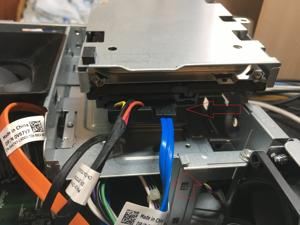
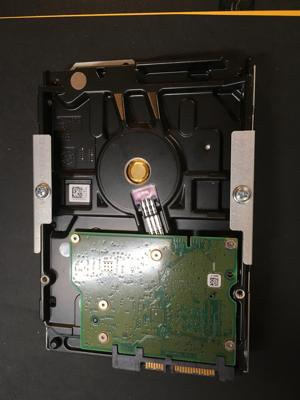
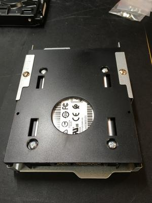
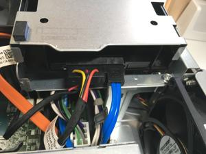
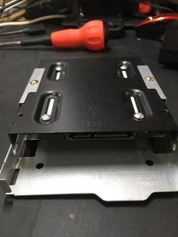
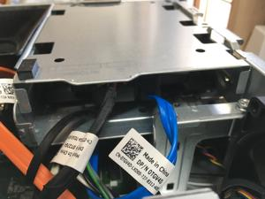
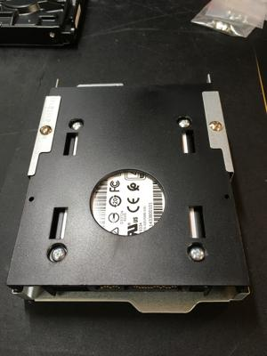
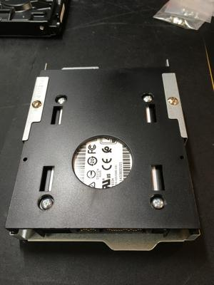

うるがいの話 ある日
最新: 最後のＳＳＤへの切り替え
うるがいとは 前提知識です
カニの画像をクリックすると『うるがいの話』サイトを表示します
うるがい(ｳﾙｶﾞｲ urugai)とは、『もずくがに』の名前でとても大きくなります。
たながー（ﾀﾅｶﾞｰtanagaa）とは手長えびのことで、何種類かあり大きいのは車 エビぐらいになります。
ぶながー(bunagaa)とは、赤い髪の毛、赤い身体、そして身長は１ｍ２０ｃｍ ぐらい、川の蟹を食べているの目撃された。場所は沖縄県国頭郡大宜味村のと ある村僕の隣近所に住んでいる爺さんから、聞いた話です。
2021年08月25日 (水）
最後のＳＳＤへの切り替え
17:46






ディスクトップパソコン２号の内蔵ハードディスクＨＤＤをＳＳＤへ切り替え
た。もともとそんなに遅くなかったので余り期待していなかったが、少し早く
なったかな程度、これでＳＳＤへの切り替えは最後となった。１ＴＢなのでお
金が・・。ＨＤＤは３．５インチ、ＳＳＤは２．５インチなので変換ブラケッ
トという器具を使うが、アマゾンで一緒に購入したものは、パソコン２号に上
手く収まらず、机の引き出しに２番目にあった箱型を代わりに使ってみた。ダ
メ！、引き出しをゴソゴソ探すと平型が見つかった、上手くいくようにと祈り
ながら。上手く収まった、運がいい人と常々思う。切替作業は午前で完了、そ
の勢いで昨日作成したプログラムをＧｉｔｈｕｂのリボジトリへ登録管理する
作業をした。これで、履歴管理が行えるので忘れることはないだろう。ヨメの
スマホの機種変更をコドモがやってくれた、手数料なしで。コロナの感染者が
とうとう８百人（８０３）を超えた、宣言しているにもかかわらず。ピークが
見えてこないどうなることやら。

 
